○完成図
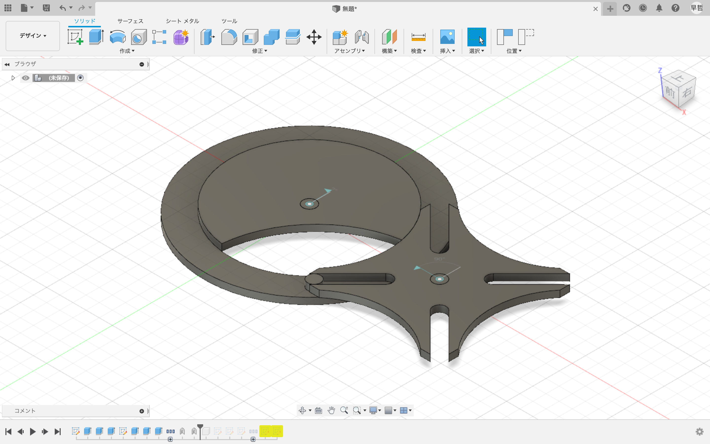
色々と使えそうな歯車の作り方を解説します。

内側からそれぞれ60,70,80mmの円を作成。

中心から水平な線・35mmの線を引き、作りたい歯車の穴の数に合わせて360/x/2°の角度に調整する。この場合のxは4なので45°で作成します。
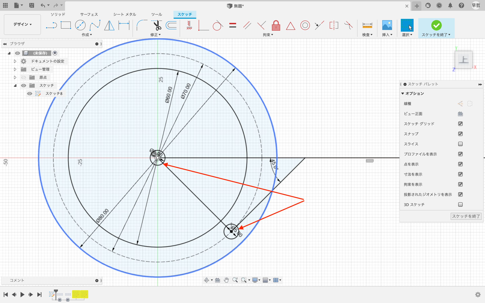
先に引いた線で三角形ができた。矢印の角にそれぞれ直径5mmの円を作成
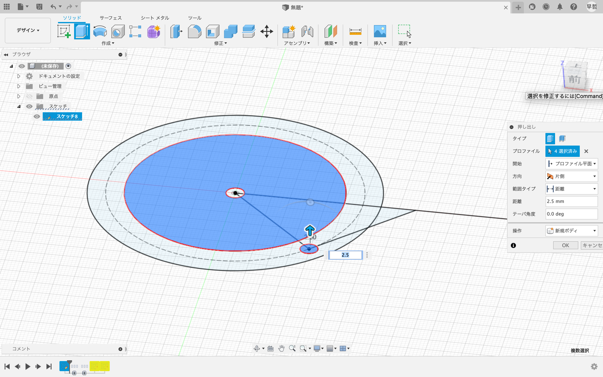
内側の円を上方向に押し出し。外側の縁は下方向に押し出す。
押し出した立体は非表示にしておくと今後の工程がやりやすいですお。
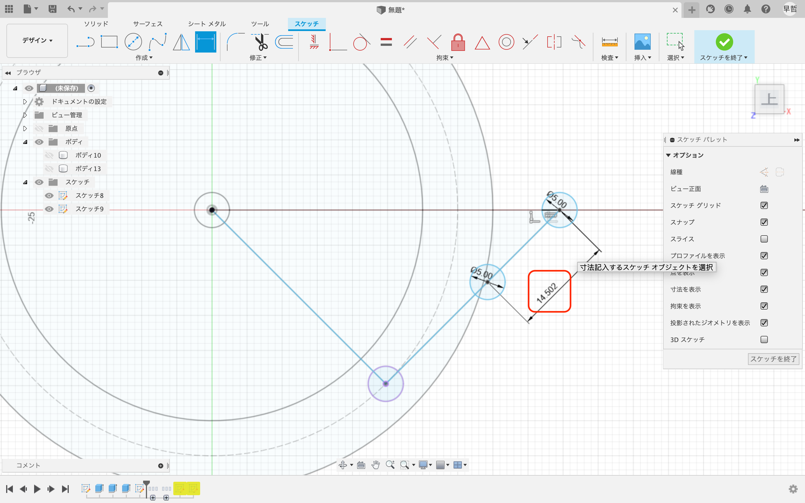
70mmの円と水平な線との交点の長さを中心にし、5mmの円を作成。
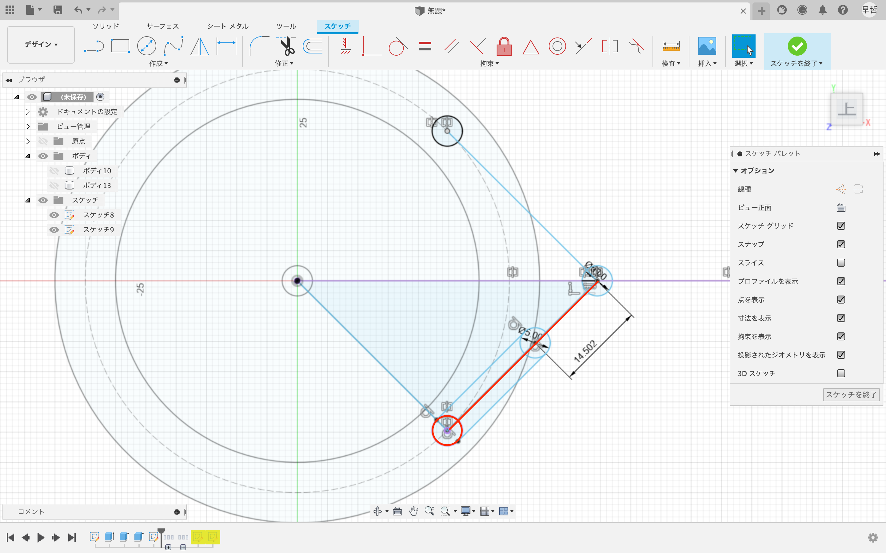
赤線で示した線を水平な線を中心にミラーで複製。
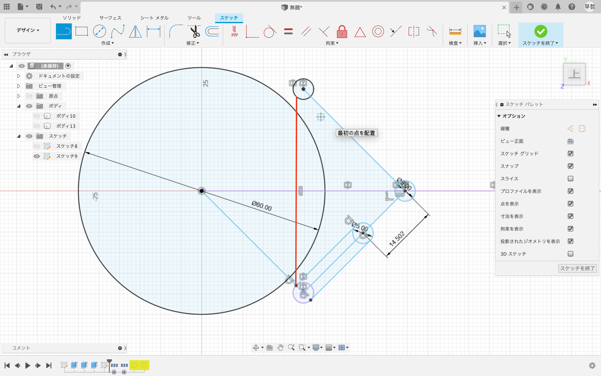
赤線で示した通りに線を引く。
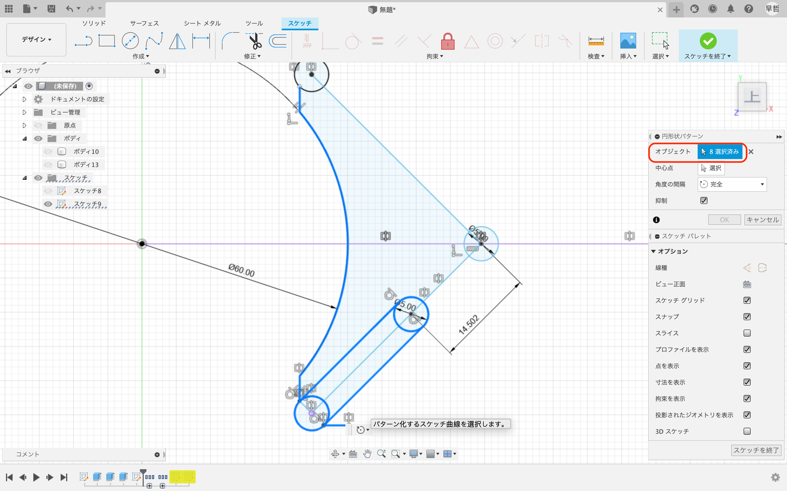
太線になっている部分を遠景上パターンで選択。4つ複製。複製したら押し出ししてね。
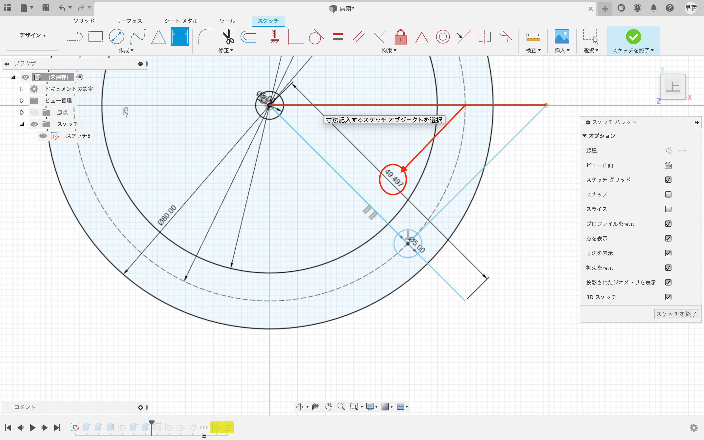
円の中心から三角形の頂点までの長さの線(赤線）を中心からもう一方の三角形の辺に交わるように線を引く。
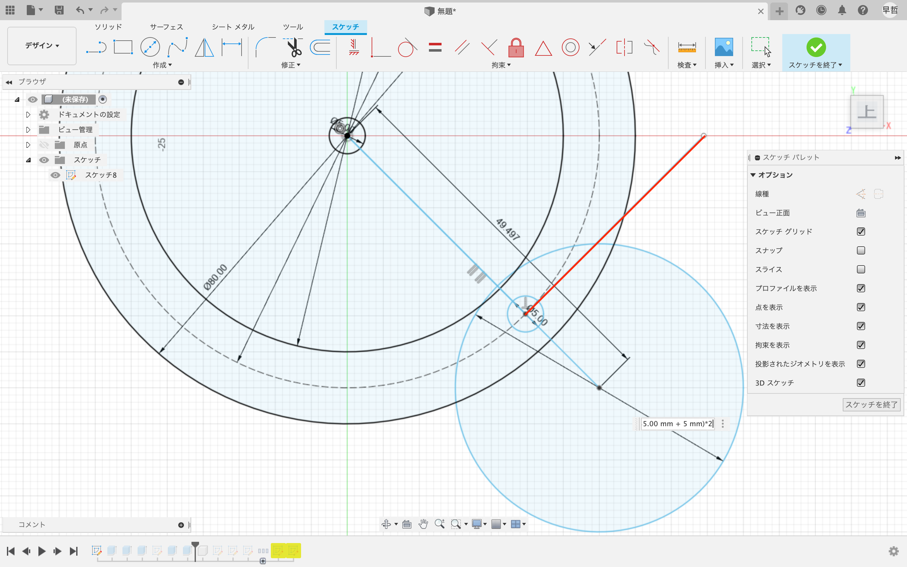
中心点に交わっていない三角形の辺の長さとを直径に持つ円を作成。二倍に拡大します。
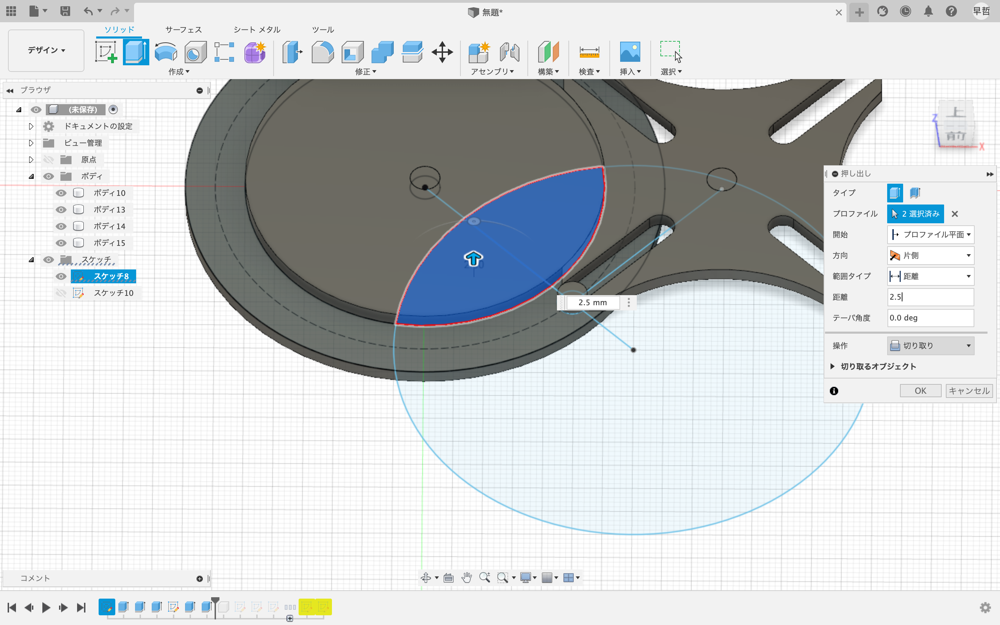
立体を表示して円と交わる部分を切り取り！
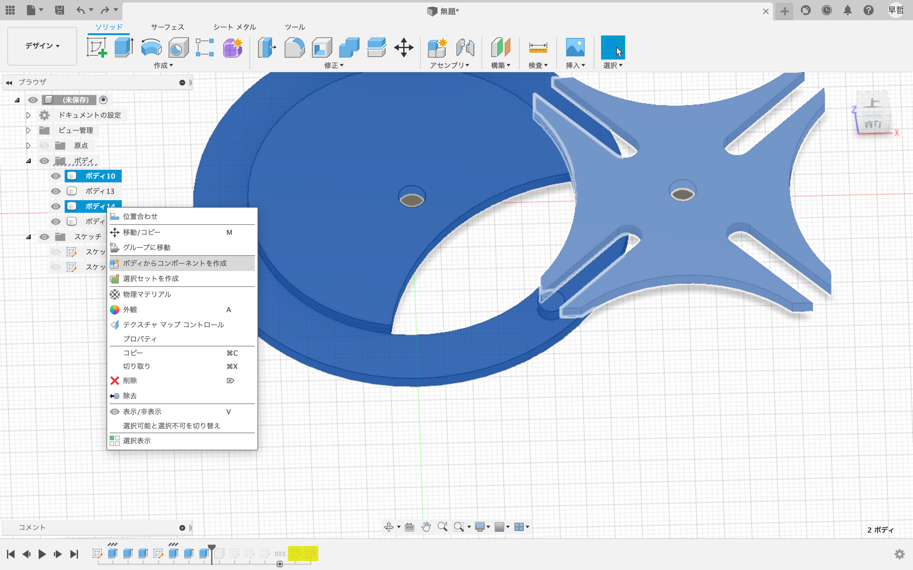
中心の軸となる部分を残してコンポーネントを作成。
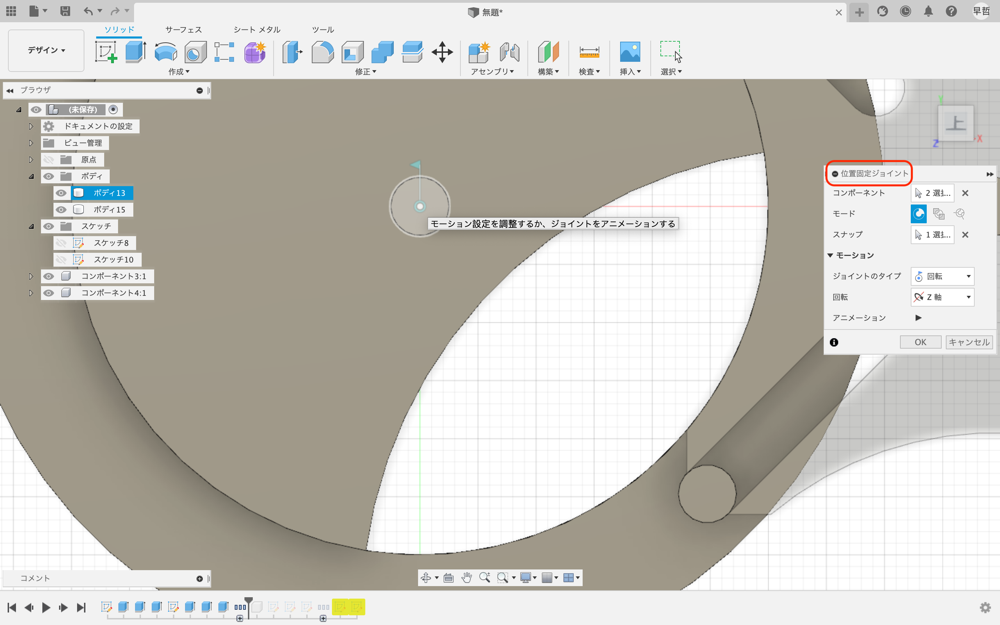
位置固定ジョイントを選択し、軸とその周りの立体をクリック。スナップで軸の中心をクリックする。
もう一方の立体も同様の操作を行う。
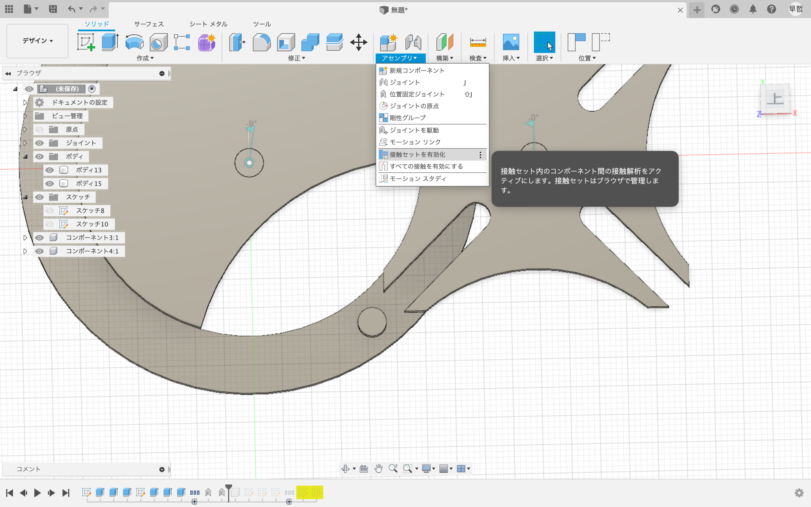
接触セットを有効化すると実際に歯車の動きができます。